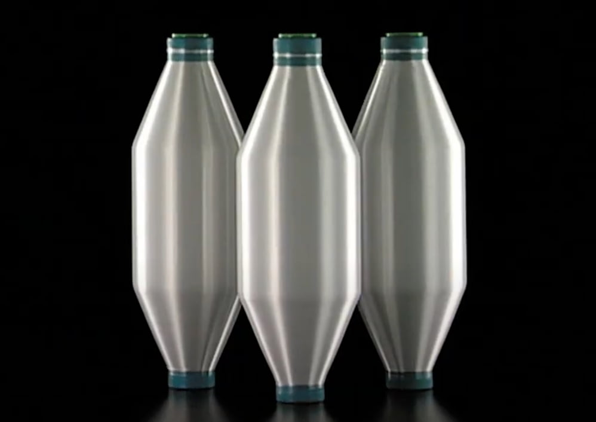
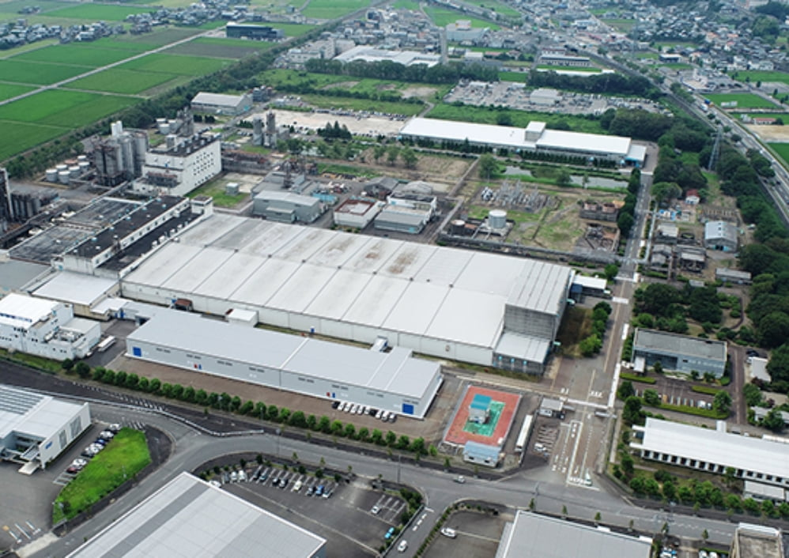
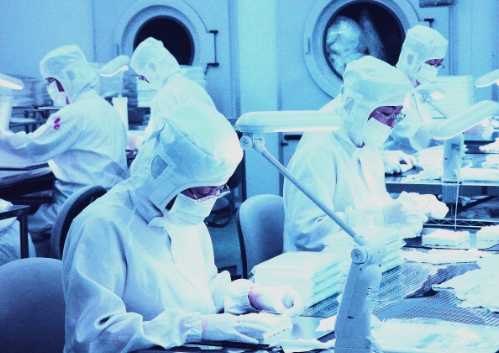
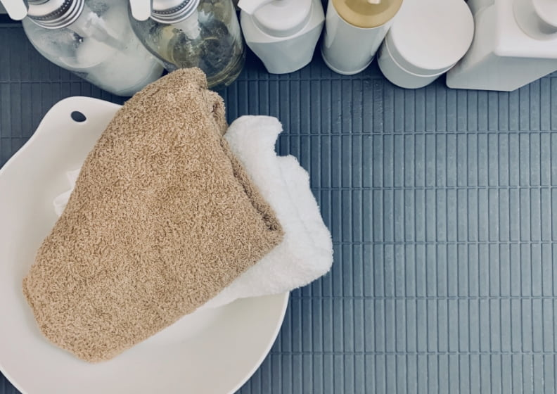

about
繊維メーカーの力を活かした
美容雑貨専門ブランド
fiber features
繊維メーカーが作る
美容に特化した製品ブランド
独自の技術で開発した新機能ポリエステル繊維「ベルカップル®」を使用し、美容向けに開発した「ベルエンジェル®」をクラウドファンディングを通じて商品化。
繊維メーカーだから実現できる高いクオリティと、独自の機能が詰まった商品は、糸のことを知り尽くした会社だからこそ実現できた製品となっています。
繊維の持つ力を引き出す商品企画で誕生したベルエンジェル®シリーズが、これまでに体験したことのない使い心地の美容商品をお届けいたします。
-
point 1 日本国内生産による
高いクオリティの商品を提供ベルエンジェル®にとどまらず、当社の製品は日本国内生産により高い品質を維持し、自信を持ってお客様にお使いいただける商品となっています。
商品のコモディティ化が急速に進み、廉価商品・安価商品が溢れるいち市場においても、一切妥協しない高いクオリティの商品をお届けいたします。
-
point 2 製品は全て自社工場による
一貫生産体制で生産安定した製品を確かな品質でお届けするためにも、当社は原糸の製造から、実際の製品に至るまで一貫生産基盤の確立のため、北陸と長浜に生産拠点を確保しています。
北陸合繊工場で差別化原糸を生産し、長浜工場で糸の編みたて・染色加工・最終製品加工・パッケージリングを行い、あらゆる顧客ニーズに対応できるよう生産体制の強化を図っております。
-
point 3 高性能・高付加価値をもつ
さまざまな繊維・商品を開発繊維メーカーとして長い歴史をもつ当社は、原糸事業、生活資材事業、工業資材事業など、あらゆる分野の繊維開発・製造を行なっております。
長年のBtoB事業で培った開発力を生かし、皆様に繊維の力を感じていただける、高品質なBtoC商品を展開しています。
美容にまつわる
こんな製品でも活躍が期待
ベルエンジェル®では、繊維の力を存分に活かしながら、美容に役立つ商品の企画・製造に取り組んでいます。極細繊維の力でリッチな泡を生み出すボディタオルをはじめ、生活雑貨といった繊維の力を活かせる商品カテゴリにおいて、KBセーレンだからできる繊維製品をお届けいたします。
-
toiletries 洗面用品

極細繊維だから生み出すことができる、細かく濃密な泡立ちを誇るバス用品など、毎日のケアでキレイになれる製品を考えています。
- 例えばこんな商品ができるかも
- 洗顔用泡立てネット
- 洗顔タオル
- ボディ用ブラシ
-
Goods 生活雑貨
繊維の持つ特性を活かしつつ、消臭・保湿成分を加えて、角質・毛穴ケアできる製品を考えています。
- 例えばこんな商品ができるかも
- 角質ケアソックス
- 手袋


project story 製品開発ストーリー
独自の技術で開発した新機能ポリエステル繊維「ベルカップル®」を使用した「ボディウォッシュミトン」をクラウドファンディング経由で開発いたしました。
私たちのBtoC商品はこれまで、小売店舗での販売をメインとしており、クラウドファンディングを活用した消費者への直接の販売は当社初の試みとなります。
-
繊維メーカーが考える
商品開発の次の一手たくさんの日用品や衣類繊維、工業繊維などを手掛ける当社において、市場の声を的確にピックアップし、お客様が喜んでいただけるような商品づくりを行うにはどうすれば良いのか。既存の繊維を活かしながら、新たな商品を開発するプロジェクトとしてスタートしました。
story 01
-
独自開発した極細繊維を
もっと使ってもらえる方法は？自由に硬さと形状を調節でき、型崩れもしにくいKBセーレンの独自開発素材「ベルカップル®」を活用し、もっと身近な製品として使ってもらうためにはどうすれば良いのか、という視点から企画をはじめ、繊維の特性を活かして美容商品に可能性を見出し、商品企画をスタートしました。
story 02
-
クラウドファンディングで
プロジェクトを開始2017年ごろから徐々に人気を博している応援購入型の支援プロジェクトであるクラウドファンディングを活用してプロジェクトをスタート。
弊社が思い描く製品の強みが、お客様にどのように反応されるかを直接感じながら製品を開発することで、よりリアルな声を反映した商品となりました。story 03
-
たくさんの反響により
無事に製品化を達成プロジェクトスタートからたくさんのお客様に高い評価をいただき、無事商品化を達成。肌に関する悩みを抱えながら、なかなか自分に合った商品が見つからないといった方など、商品化に期待を寄せる皆様に対し、自信を持って製品をお届けすることができました。
story 04
KBセーレンでは、
これからも繊維の研究開発力を存分に発揮し
美容・日用品に関連する商品を企画していきます
other products KBセーレンが展開する製品
私たちはこれまで培ってきた繊維開発の独自技術を活かし、お客様の生活が豊かになる商品を開発しています。マイクロファイバーのによって掃除がもっと楽になる「そうじの神様®」シリーズをはじめ、高い機能性を誇るマスクシリーズを展開する「フレシェリー®」といった製品を展開。この機会にぜひご覧ください。
-
そうじの神様®

超極細繊維マイクロファイバー「ベリーマ®」、「ベリーマ®X」を使用した、家庭用おそうじクロス。
繊維の力だけであらゆる汚れをキレイに落とし、ミクロの汚れも逃さずキャッチします。 -
フレシェリー®

繊維メーカーだからできる高い機能性を誇る繊維を用いた生活雑貨をお届けするブランド「フレシェリー®」。通気性抜群のマスクや抗菌性に優れたマスクケースなど、繊維の力で肌を守り、呼吸を快適にする商品を開発しています。